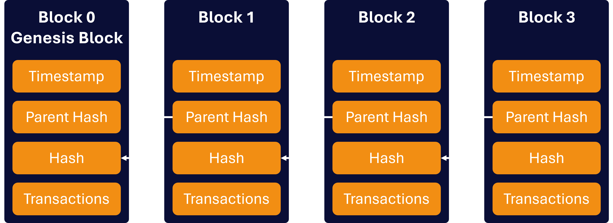

How Bitcoin Works
Bitcoin may look like a simple digital currency, but there is a lot of computer science behind how it operates. Bitcoin uses a combination of blockchain technology, cryptography, computer networks and a process called proof-of-work to allow transactions to take place without relying on a central authority. Understanding these technologies helps explain how Bitcoin can operate as a decentralised digital payment system.
Blockchain
A blockchain is a type of digital ledger that records information in a series of connected blocks. In Bitcoin's case, the blocks contain information about transactions that have taken place on the network. When a new block is created, it is linked to the block before it, creating a continuous chain of blocks.

One important feature of the Bitcoin blockchain is that copies of it are maintained by many computers around the world. This means that there is not one single computer or organisation responsible for keeping the entire record. Instead, computers participating in the network work together according to the rules of the Bitcoin protocol.
The information stored in a blockchain is designed to be difficult to change once it has been added to the chain. Each block contains information that connects it to the previous block, so changing an old block would require significant computational work. This helps protect the history of Bitcoin transactions and is an important part of the network's security.
Transactions
-
A transaction is created
The sender uses a Bitcoin wallet to create a transaction. The transaction specifies how much Bitcoin is being transferred and where it is being sent.
-
The transaction is broadcast to the network
After being created and digitally signed, the transaction is sent to computers participating in the Bitcoin network. These computers can share the transaction with other computers on the network.
-
The transaction is verified
The network checks whether the transaction follows Bitcoin's rules. This includes checking the digital signature and whether the sender has the Bitcoin necessary to make the transaction.
-
The transaction is added to a block
Valid transactions can be collected together into a new block. Bitcoin miners compete to complete the proof-of-work required for a block to be accepted by the network.
-
The block becomes part of the blockchain
Once a block has been accepted, it is added to the existing blockchain. The transaction is then recorded as part of Bitcoin's permanent transaction history.
Bitcoin Mining
Bitcoin mining is the process used by the network to add new blocks to the blockchain and help secure the system. Miners use specialised computers to perform large numbers of calculations as part of Bitcoin's proof-of-work system. Their computers compete to find a solution that satisfies the network's requirements for a new block.
When a miner successfully produces a valid block, it can be accepted by the Bitcoin network. The miner may receive a reward according to the rules of the Bitcoin protocol, consisting of newly created bitcoin and transaction fees.
Mining requires a significant amount of computing power, which means it also requires electricity. The amount of energy used by Bitcoin mining is one of the reasons that the environmental impact of Bitcoin is frequently discussed.
Mining is important because it makes it computationally expensive to interfere with the blockchain. Rather than having one organisation decide which transactions are valid, Bitcoin uses its protocol and distributed network to establish which blocks are accepted.
Bitcoin Wallets
A Bitcoin wallet is software or hardware that allows a person to interact with the Bitcoin network. Despite the name, a Bitcoin wallet does not literally contain physical bitcoins. Instead, it manages the cryptographic information that allows someone to control Bitcoin associated with particular addresses.
Bitcoin wallets use cryptographic keys. A public key can be used to help create a Bitcoin address that can be shared with other people when receiving Bitcoin. A private key is secret information that is used to authorise transactions. Keeping private keys secure is extremely important because someone who obtains a private key may be able to control the Bitcoin associated with it.
Different types of wallets exist, including software wallets that run on computers or phones and hardware wallets designed to keep cryptographic keys more securely separated from an internet-connected device. The different types of wallets involve different approaches to convenience and security.
Overall, Bitcoin works because several different computer science concepts operate together. The blockchain provides a shared record of transactions, cryptography helps authenticate transactions, the network distributes information between computers, and proof-of-work helps secure the process of adding new blocks.